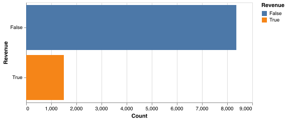
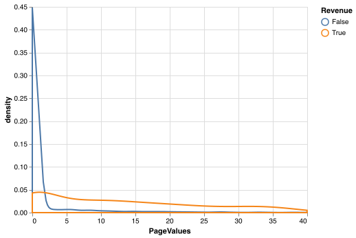

Data Analysis¶
The data consists of numeric and categorical features. Amongst these features, “BounceRates”, “ExitRates” and “PageValues” features represent the metrics measured by “Google Analytics” for each session on the e-commerce site. Below are key observations from our data analysis:
Imbalanced Dataset¶

This dataset is imbalanced, where only 15% of sessions ended in a purchase. While 15% is not extremely imbalanced, we can still explore methods or algorithms that are better at dealing with an imbalanced dataset.
Importance of Page Values¶

PageValues is defined as the average page value of the pages visited by the user. In an e-commerce context, values are normally assigned to important pages such as checkout pages, or pages preceding the checkout process. As seen from the figure above, having a PageValues of above 5 increases the likelihood of purchase conversion. Hence, this PageValues feature provides a strong signal on whether the user will make a purchase or not.
Correlation plot of the dataset¶

Based on the above insight on PageValues, we looked at the correlation between numeric features to find whether other features are strongly correlated with PageValues.
We see that higher pageview and longer browsing duration have a positive correlation with PageValues. This is intuitive, as higher pageview and longer browsing duration indicate high engagement from the user. For example, if a user already had an item in mind, they might spend more time on an e-commerce website to compare prices reviews of similar products. A highly engaged user will be more likely to purchase than a passive user.
Another feature of interest is ExitRates, which is negatively correlated with PageValues. ExitRates is defined as the average exit rate of the pages visited by the user. ExitRates is also positively correlated with BounceRates. This finding fits well in our ‘engaged user’ hypothesis: sessions with high ExitRates or BounceRates indicate a less engaged user, resulting in fewer purchase conversions.
Right-skewed feature distribution¶
Finally, we also noted that many numeric features are right-skewed with long tails. This is common in e-commerce settings, whereby some users have extremely high usage statistics. We can experiment with the removal of outliers, or feature transformation such as Box-Cox, and see whether it will help in model performance.